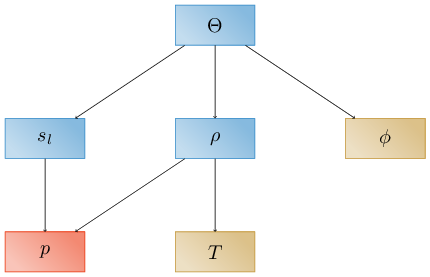
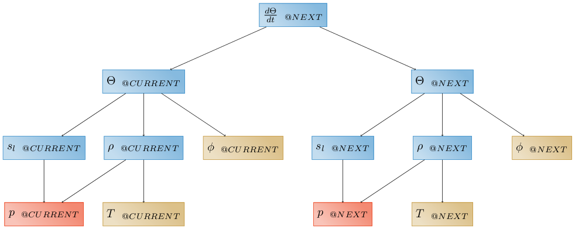
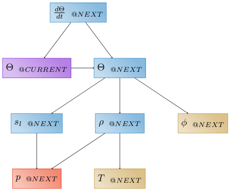

Evaluators and the Dependency Graph#
Previously, all concepts were used to describe data – now we will describe the concepts used to describe how we compute data.
Evaluators are the finest-grained unit of computation done in Amanzi-ATS. Typically, they are used to define a term in an equation, calculating one or more data values. Evaluators are used for nearly all persistent data; those data and evaluators are split into four categories:
primary variables are used to refer to the variables solved for by solving a PDE. For instance, the primary variable of an energy equation is typically a temperature; an energy PDE would create a primary variable evaluator to tell the code that it intends to compute this value.
independent variables are functions of space and time, but nothing else. Independent variable evaluators compute functions, or load user-provided data from files.
secondary variables are functions of other variables. Secondary variable evaluators implement models to compute secondary variables, e.g. water density as a function of temperature, or saturation as a function of pressure.
aliased variables are simply a way of creating multiple logical references to the same data. This is solely for performance concerns, and is only ever used across multiple tags of the same variable. For instance, if a transport equation is being subcycled, the “concentration@NEXT” and “concentration@transport_subcycled_next” may not actually need to be independent copies of the same data. Once subcycling is complete and the outer step is done, they will refer to the same values, and can share the same data. In this case, we create an aliased evaluator that indicates that “concentration@NEXT” points to the same data stored as “concentration@transport_subcycled_next”.
time-advanced variables are a way of creating a variable that is computed by copying a “next” tag to a “current” tag. These may be the global tags, or they may be subcycled tags. These are secondary variables, because they depend upon the thing they are advancing to. These are most frequently used to store things that are needed in case the step fails, but are also used when, for instance, time derivatives are needed.
Evaluators are combined into a single dependency graph, whereby a given evaluator points to all of its dependencies. This graph is a directed, acyclic graph. Leaf nodes of the graph are either primary or independent variable evaluators; internal nodes are secondary or aliased variable evaluators. This is a very powerful concept, and forms one of the two core capabilities that makes Arcos useful.
For example, a simple dependency graph might be used to describe how the code computes water content. At runtime, the user might define a set of evaluators that, together, form a dependecy graph for water content.
Here and throughout, primary variables are shown in red, independent variables in brown, secondary variables in blue, aliased variables in gray, and time-advanced variables in purple. Arrows in the graph point from an evaluator to its dependencies. Leaf nodes in the dependency graph are the primary variable \(p\) (pressure) and the independent variables \(T\) (temperature) and \(\phi\) (porosity), which must therefore be provided by the user as functions of space and time or as data. Secondary variable include \(s\) (saturation) computed as a function of pressure, \(\rho\) (density) computed as a function of temperature and pressure, and \(\Theta\) (water content), computed as a function of saturation, density, and porosity. Implied here (and in many of our figures) is the fact that these evaluators are all at the same tag.
Now presume we wish to compute a time derivative, e.g. \(\frac{\partial \Theta}{\partial t}\). First we would have to define tags between which to difference – let’s say the global “CURRENT” and “NEXT” tags. Note that we typically don’t use evaluators for time, and so time does not appear on dependency graphs. Logically it could, and maybe should! Then, we have two choices. We could replicate the above graph at each of the two tags:
Note that we have to use a “time-advanced evaluator” to save pressure at the “CURRENT” time, while independent variables may be computed at either “time@CURRENT” or “time@NEXT”, and secondary variables are recomputed. Alternatively, we could simply use a “time-advanced evaluator” to copy water content to the “CURRENT” time:
Note we typically woud use the second, as it requires less computation and less memory, but both are valid.
Given these examples, it becomes easier to define what an evaluator is: it is a small piece of code that knows how to compute something, and knows what it needs to compute that thing. Nearly 75% of ATS physics is implemented in evaluators. Evaluators can be generic, for example the “additive” evaluator, which simply takes a list of dependencies and adds them up. They can be very specific, for example a van Genuchten water retention model which computes liquid saturation as a function of water pressure. They can compute multiple things, for instance we often compute mass and molar density at the same time, since these differ only by a factor of molar mass. Occassionally, we lump common quantities together, for instance computing an entire multi-bounce radiation balance between a canopy, bare ground, and snow-covered ground in a single evaluator. Even external models can be used as evaluators, as long as they require an input and compute an output.